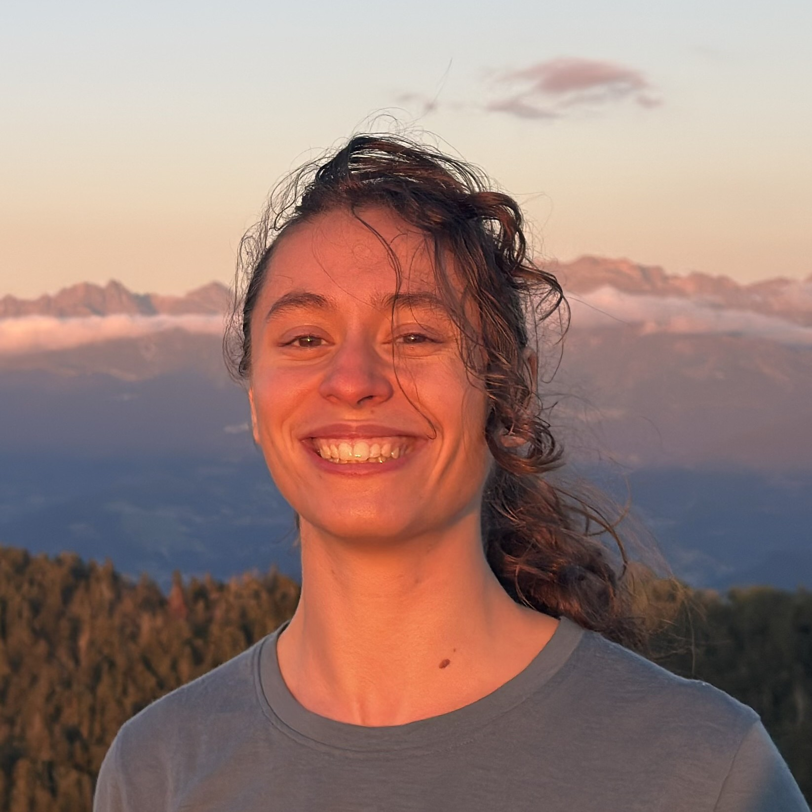

PhD student — Bio-inspired computer vision & complex-valued neural networks (CVNNs)
E-mail:
johanna.rondony[at]centralesupelec.fr
I am a first-year PhD student in computer science at SONDRA, CentraleSupélec. My thesis is co-supervised by Jean-Philippe Ovarlez (SONDRA CentraleSupélec, DEMR ONERA) and Benoit Cottereau (IPAL CNRS @ NUS Singapore, CerCo CNRS).
Computer vision · Complex-valued neural networks · Bio-inspired learning and neural synchrony · Unsupervised segmentation.
I study how object segmentation can emerge in a neural network from the synchrony between its neurons, rather than from explicit supervision. Using complex-valued and bio-inspired models, I run controlled experiments and ablations to pin down what actually drives this emergent binding. My results so far suggest it does not come from a specific architecture, but from a more global synchronization mechanism whose conditions remain surprisingly narrow and fragile.
In preparation. My current work centres on understanding and characterizing emergent binding in complex-valued and bio-inspired networks.
Hosted on GitHub Pages — Original theme by orderedlist